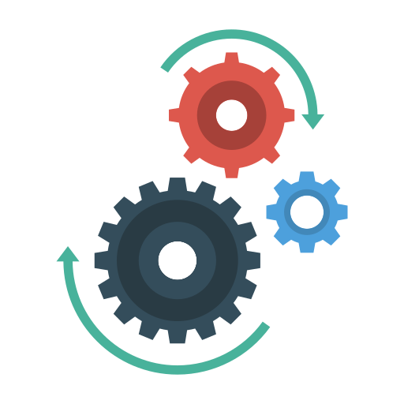

Бычков Юрий
Ruby on Rails разработчик
t.me/darexu — предпочтительный канал связи
Полтава, Украина. Возможен переезд или удаленно
|
Принципы ООП: классы, наследование, объекты, переменные и методы экземпляров Чтение файлов JSON и XML Работа с сетью Синтаксис, code style. Без грамотно оформленного кода никуда Ruby Way: Разметка, блоки RubyGems Дебагер |
|
|
Модели, миграции Архитектура приложений MVC Модель ActiveRecord чтобы отдать создание SQL - запросов на аутсорс Для подключения аccет Webpacker и Asset pipeline Bundler чтобы не потерять и установить нужные версии gem'ов Devise для опознания своих среди чужих I18n для локализации приложения Fog AWS, Carrierwave для загрузки картинок на сервис Amazon S3 reCAPTCHA — и боты не пройдут ActionMailer и гем Mailjet для отправки писем Библиотека Rspec и гем Factory Bot для тестирования. С ними не пропустить ошибку в продакшин Capybara, BDD, TDD Pundit для фейсконтроля Оmniauth для авторизации через внешние сервисы Библиотека ActionCable для общения сервера и клиента по протоколу WebSocket Jsonapi Serializer чтобы отправить через WebSocket только нужные данные |
|
|
Система контроля версий Git. Без неё не обойтись Github для хранения репозиториев |
|
|
SQLite PostgreSQL Redis + Resque для фоновых задач |
|
|
HTML, CSS, адаптивная верстка Bootstrap и Skeleton для ускорения создания верстки |
|
| DevOps |
VPS Настройка домена и его записей Passenger + Nginx Capistrano чтобы процесс дпелоя был не трудозатратный Heroku Linux. Умею выходить из Vim'а |
| Bbq – приложение для организации встреч | shashlik.site | github |
| Игра «Кто хочет стать миллионером?» | herokuapp | github |
| Instatalk – онлайн чат | herokuapp | github |
| Askme – сервис «Спроси меня» | herokuapp | github |
Курс онлайн-интенсив по Ruby on Rails «Хороший программист»goodprogrammer.ru03.2020 – 11.2020 |
Национальный университет «Полтавская политехника имени Юрия Кондратюка»Магистр. Отраслевое машиностроение Тема диплома «Исследование процесса резания грунта отвалом с газовой смазкой» nupp.edu.ua09.2015 – 12.2019 |
ООО «Нова пошта»Специалист по обслуживанию физических и юридических лиц Была такая ситуация, ко мне позвонила женщина, которой не доставили вовремя документы для презентации в отделение Киева. Доставка должна была быть сегодня, но проверив по информационной системе, я увидел, что посылка находиться в одном из терминалов Киева, вовремя доставить не успели. Её могли доставить завтра, но завтра было воскресенье и отделение работало с 11:00, и не понятно когда бы документы доставили бы в отделение, а ей нужно было как можно скорей получить. Понимая важность скорейшего получиния, я для решения этой проблемы позвонил начальнику смены терминала. После объяснения ситуации начальник смены сказал мне, что проконтролирует отправку первой машиной утром. После этого я сообщил эту информацию клиентке. Обращение я передал другому сотруднику контакт–центра для контроля утром. В следующий свой рабочий день я открыл свою рабочую почту, увидел благодарность за решение этого обращения. Клиент написала в фейсбук на страницу компании восторженный отзыв, часть из которого была примерно такой: "Ваш клиентский сервис на высоте! Я позвонила вчера на горячую линию, сообщила о своей проблеме, а сегодня еще до открытия отделения, в 10:50 я смогла получить свою посылку". Машина приехала раньше и ей выдали до открытия. |
В процессе прохождения курса «Хороший программист» получил опыт создания Rails – приложений. Планирую учиться новому и увеличивать свои знания по web – технологиям, в частности учить Javascript и углубляться в Rails. Хочу найти работу в дружелюбной команде.
Владение языками: русский – носитель, украинский – носитель, английский – B1, Intermediate